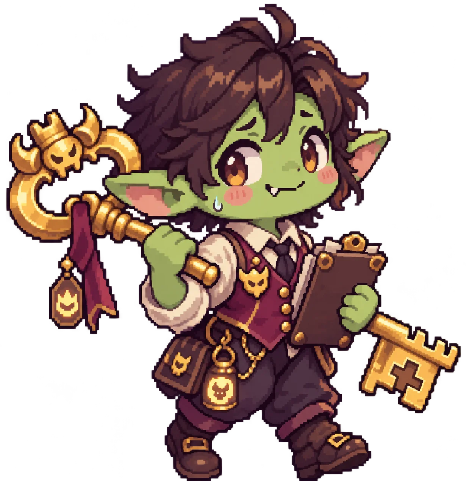
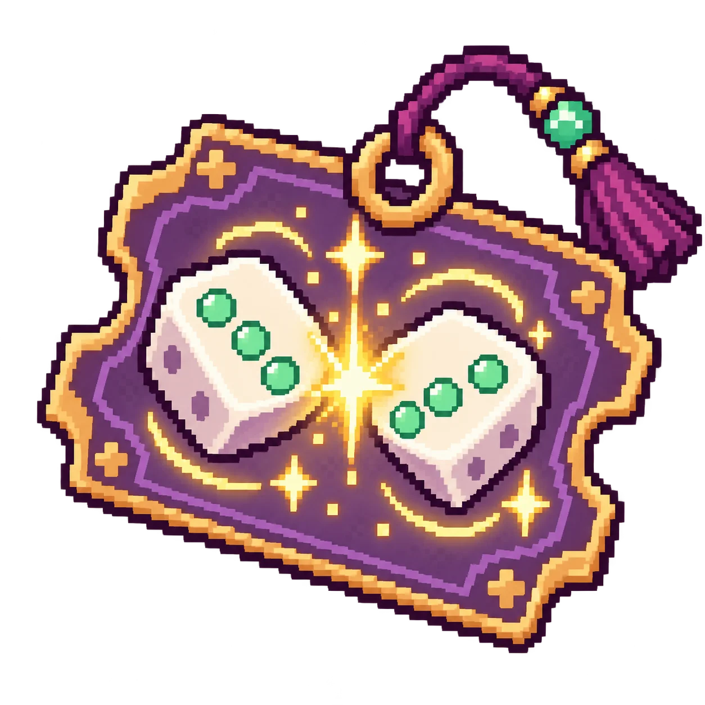
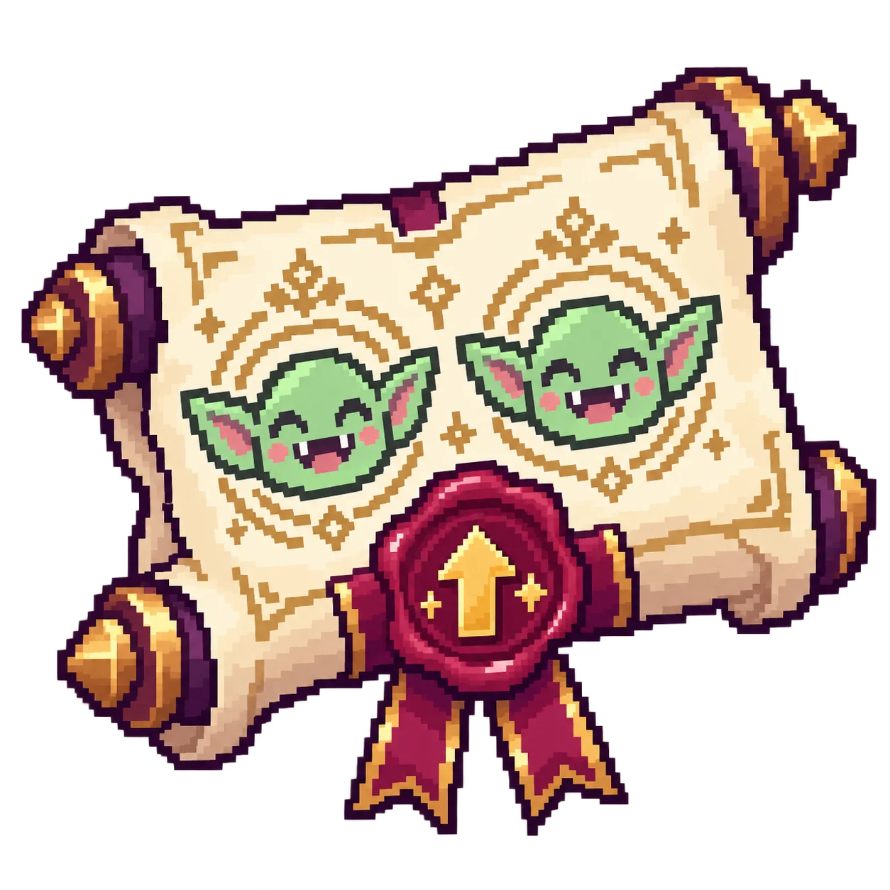
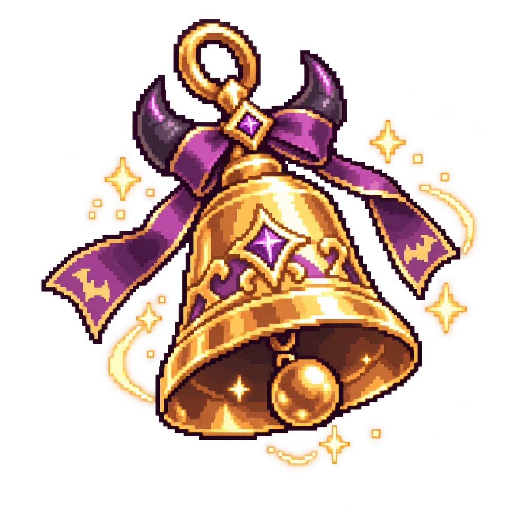

첫 출근부터 야간 당직이라니!

처음 한 번 배우고 무한 모드로
일반 적 10명당 1코인 · 군단장 +5코인



이 게임은 세로 화면에서 진행할 수 있어요. 진행 중인 전투는 일시정지되며, 세로로 돌아온 뒤 계속할 수 있습니다.
한 번의 훈련으로 같은 그룹 모두 성장해요.신규 채용 직원에게도 적용 · 코인만 사용 · 확정 성공기록은 현재 기기·브라우저에 저장돼요.
보유 SP · 같은 종류 전체 강화
직원 소환 → 같은 종류·등급끼리 합성하세요.실패 확률은 2등급 5%부터 7등급 30%까지 증가합니다.실패하면 이동한 직원만 사라져요.5등급부터 고유 스킬을 쓸 수 있어요.합성권은 선택 후 두 직원을 고르면 사용돼요.
등급에 따른 공격 속도 증가와 별도로 기본 공격·피해 스킬이 강해져요.1등급 ×1 · 2등급 ×1.05 · 3등급 ×1.2 · 4등급 ×1.55등급 ×2 · 6등급 ×2.7 · 7등급 ×3.8합성은 자리를 확보하고 스킬을 여는 전략이에요. 전체 화력이 항상 오르는 것은 아니에요.
현재 전투의 웨이브·배치·장비 레벨·SP를 초기화하며 미정산 처치 보상은 지급하지 않아요. 보유 코인·영구 고용·저장된 근무 명단은 유지돼요. 이미 사용한 아이템은 반환하지 않아요.
현재 전투의 웨이브·배치·장비 레벨·SP가 초기화되고 미정산 처치 보상은 지급되지 않아요. 보유 코인·영구 고용·저장된 근무 명단은 유지되며 사용한 아이템은 반환하지 않아요.
사원증을 눌러 숨은 사연과 능력을 확인하세요.
마왕성 인사총무팀 · 야간 근무자 열람용
일반 직원 90% · 지원 영웅 10%이미 채용한 직원이 나오면 채용 포인트 +13포인트를 사용해 미채용 직원 1명을 골라 채용할 수 있어요.사용: 직원 도감 → 미채용 → 지정 채용
아이템은 1회 소비 · 용병은 영구 고용 후 1명 선택글로벌 코인 전용 · 현재 가격은 테스트용입니다.
당직마다 무작위로 만나는 마왕성의 하루.새 이야기 발견 시 글로벌 코인 +5 · 이야기당 최초 1회수집한 이야기는 언제든 다시 볼 수 있어요.
보상 하나만 골라주세요.
대기 직원 선택 → 제외할 출전 직원 선택. 항상 5명으로 유지해요.